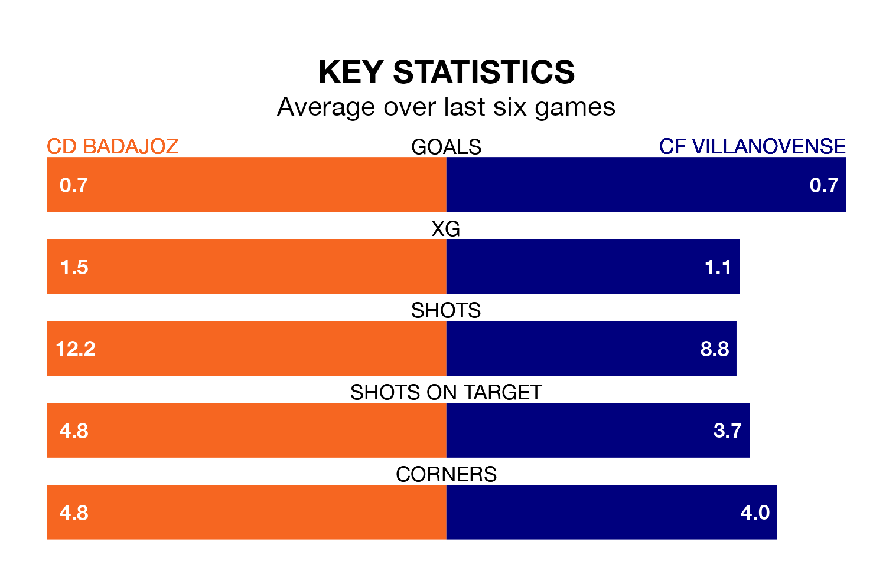

Struggling CD Badajoz face CF Villanovense on Sunday looking to build on a win in their last league outing.
After securing all three points with a 2-1 victory over Talavera CF on March 10, Badajoz sit 15th in the Segunda División RFEF Group 5.
They travel to play a Villanovense side ninth in the standings, who lost in their last match, 1-0 against CDA Navalcarnero.
In the last 10 years, Badajoz and Villanovense have played each other on seven occasions. Badajoz won four of them, Villanovense one, and they drew twice.
On average, Badajoz scored 1.1 goals and Villanovense 0.7 in those matches.
Their last meeting was on November 5, when Badajoz won 2-1 away.
With 23 goals in 26 games so far this season, Badajoz are scoring at below the league average rate with 0.9 goals per game. And they are conceding at an average rate, letting in 28 goals at a rate of 1.1 per game.
Villanovense are also below average scorers, with 1.0 goal per game, compared to a league average of 1.1. They have conceded 0.9 goals per game.
The home side are in mixed form in the Segunda División RFEF Group 5, with two wins and two draws from their last six games.
With three wins and three losses over that period, the visitors' form is slightly better – they have taken nine points from 18, compared to Badajoz's eight.
Updated: 15:10 (UTC), 15/03/24